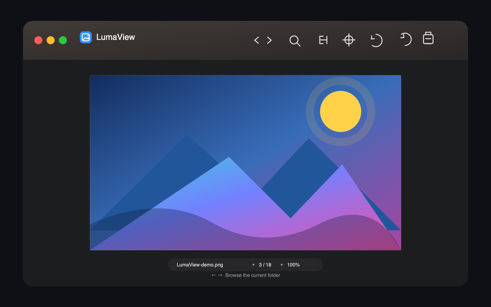
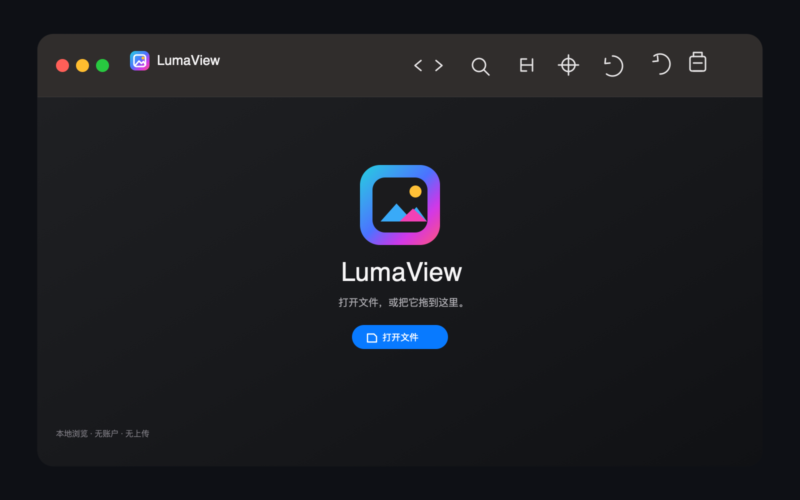

文件夹里的上一张 / 下一张
直接从访达或“打开文件”进入。LumaView 先显示当前图，再轻量索引同级文件，工具栏和方向键都能自然切换。
仅为 Apple Silicon Mac 打造
LumaView 是一款极简的本地原生看图软件：打开一张图片，即刻沿同级文件夹前后浏览。没有侧栏、没有图片库、没有上传。
macOS 13+ · Apple Silicon · 完全本地处理

为看图而存在

直接从访达或“打开文件”进入。LumaView 先显示当前图，再轻量索引同级文件，工具栏和方向键都能自然切换。
适合窗口、连续缩放、平移与旋转围绕画布本身设计；状态栏显示相对于原图的真实百分比。
JPEG、PNG、HEIC、GIF、TIFF、WebP、PDF、许多系统 RAW 格式与 Sketch 文档预览，都在本地完成。
私密是默认行为
LumaView 不创建图片库，不复制源文件，不要求账户，也不上传你的图像。可选更新检查只读取公开版本元数据。
当前为公开预览版，采用 ad-hoc 签名，尚未经过 Apple 公证。若首次启动出现验证提示，请在“应用程序”中 Control 点按 LumaView → “打开” → 再次“打开”；无需关闭系统级安全设置。